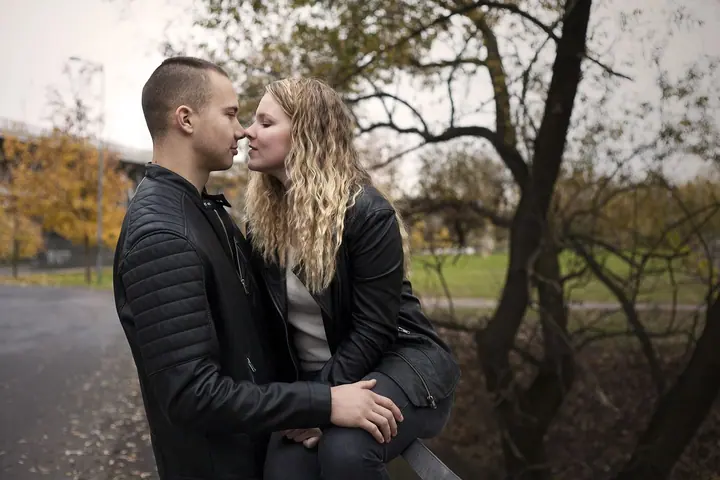

Ženský portrét a glamour
Focení ženské krásy, při kterém můžete být samy sebou, bláznit, tančit i se vypovídat. Fotky s precizní retuší, které vám dodají sebevědomí.

Fotografka ženských portrétů a svateb
Jmenuji se Martina Kolaříková a fotím ve Veltrusích a okolí. Nejvíc mě baví focení ženské krásy, moc ráda ale fotím i svatby a rodiny. Na focení se mnou se můžete uvolnit a být sami sebou.
Zeptat se na termín
Focení ženské krásy, při kterém můžete být samy sebou, bláznit, tančit i se vypovídat. Fotky s precizní retuší, které vám dodají sebevědomí.
Ke každé svatbě přistupuji individuálně a atmosféru celého dne zachovávám co nejvíc autenticky. Fotky jsou o vás a vašich blízkých, ne o trendech.
Klidné focení pro budoucí maminky, venku nebo v prostředí, kde se cítíte dobře. Lokaci vybereme po domluvě.
O focení jsem se začala zajímat už v dětství a aktivně se mu věnuji od roku 2011. Vyzkoušela jsem řadu fotografických odvětví a nejvíc jsem si oblíbila focení ženské krásy. Ženy za mnou chodí, protože si chtějí dodat sebevědomí a cítit se krásné. Je to vlastně taková terapie.
Na focení je pro mě nejdůležitější, abyste se cítily příjemně a uvolněně. Můžete bláznit, tančit i se vypovídat. Výsledné fotky pak nejsou jen o kráse, ale i o vzpomínce na den, který byl jen váš.
Další mou oblíbenou kategorií jsou svatby, dny plné lásky, zpěvu, tance a vřelých objetí. Ráda vymýšlím, jak splnit i vaše nejbláznivější nápady a převést je do fotek, a dodat jim trochu své perspektivy přes hledáček mého parťáka.

Napište mi přes formulář nebo zavolejte a řekněte mi, jaké focení si představujete. Ráda vám vyjdu vstříc i s nápadem, který v ceníku nenajdete.
Probereme vaše představy, lokaci i outfit. U svatby spolu podrobně projdeme průběh celého dne.
Během focení vám poradím s pózováním a pomůžu vám uvolnit se. Můžete bláznit, tančit nebo si jen povídat.
Vybrané fotky profesionálně upravím a s pečlivou retuší je dodám v nejvyšší tiskové kvalitě.
Portrétní focení stojí 3 000 Kč a obsahuje 10 fotografií s precizní retuší tváře. Lokaci vybereme podle domluvy, každá další fotka u klasického focení je za 300 Kč.
Svatbu fotím od 6 500 Kč. Počet fotografií domluvíme individuálně, součástí je podrobná konzultace průběhu i vašich představ a doprava je v ceně.
Vůbec ne. Poradím vám s outfitem i s pózováním a postarám se o to, abyste se během focení cítila příjemně a uvolněně.
Ano, v ceníku najdete glamour, tematické focení i focení se zvířaty. U tematického focení je líčení a zapůjčení kostýmu v ceně a spolupracuji se zkušenými vizážistkami. Když nenajdete to, co hledáte, napište mi a domluvíme se individuálně.